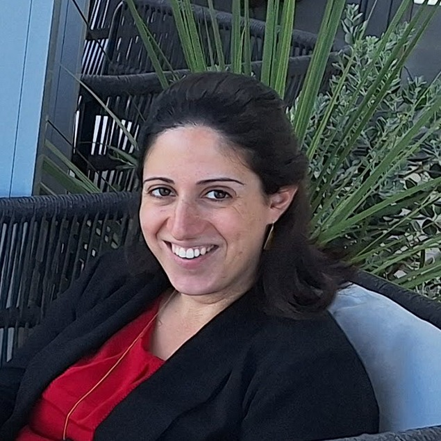

About
I am Bitya, a fourth-year PhD candidate in the Department of Statistics and Data Science
at the Hebrew University of Jerusalem.
My research, supervised by Yuval Benjamini,
focuses on the stability and reliability of explainable AI methods.
Publications
-
Confident Feature Ranking
[full text],
[code]
In International Conference on Artificial Intelligence and Statistics (PMLR), 2024. -
Venous thromboembolism during pregnancy: Trends, incidence, and risk patterns in a large cohort population
[full text]
In International Journal of Gynecology & Obstetrics, 2023. -
Air travel during pregnancy and the risk of venous thrombosis
[full text]
In American Journal of Obstetrics & Gynecology (MFM), 2023.
Awards
- Outstanding poster award, Annual conference of the Israeli Statistical Association (2024).
- David Assaf prize for excellent PhD students, the department of Statistics and Data Science, Hebrew University (2024).
- Atid B'ivrit PhD scholarship, Hebrew University (2022-).
- Center for Interdisciplinary Data Science Research (CIDR) PhD scholarship, Hebrew University (2022-2023).
Outreach
- Orginazer of NeurIPS 2024 workshop Interpretable AI: Past, Present and Future.
- Highlighted reviewer for NeurIPS 2023 workshop XAI in Action: Past, Present, and Future Applications.
- Co-founder and leader of Baot's community for women in research (2023-).
- Community leader at Baot, Israel's largest community of experienced women in R&D (2021-2024).
- Program co-manager at DataNights (2020-2023).
Talks
- Using Explainable Machine Learning - Gaps Between Academia and Industry, WiDS TLV (Roundtable discussion, 2023).
- Local Explanations - Concept and Methods, Explainable AI (XAI) Course by DataNights and Microsoft Reactor (2023).
- Problem Solving - What is the Problem?, DS Meta-Skills course by DataNights (2021).
- Behind the Scenes: Explainable AI With SHAP, Women on Stage Conference (2021).
- Automation of Feature Engineering: Pros and Cons, PyCon Israel (2019).
Teaching (Hebrew University)
- Introductory workshop to final project in data science, 67813 (2024-)
- Final project in data science, 67814 (2024-)
- Applied project, 52056 (2023-)
- Introduction to data science, 51127 (2023)
- Advanced statistical models A, 52801 (2022)
- Statistical learning and data analysis, 52525 (2022)